CS 180 · Fall 2026 · Project 3
Training a UNet denoiser, then time- and class-conditioned flow matching models that generate MNIST digits
This project is split into two parts. In part A, we work with a pretrained diffusion model and in part B, we train a one-step denoiser and then a few flow matching models on MNIST from scratch.
Mixing a clean image with Gaussian noise along the flow path, xt = (1−t)ε + t x1.
In this convention t = 0 is pure noise and t = 1 is the clean image. I sampled one noise tensor and reused it at t = 0.25, 0.50 and 0.75, so the three inputs differ only in how much noise they contain. For the image we got to choose, I decided to use a photo of my two cats for Parts 1.1 through 1.5!!
At t = 0.25 the cats are barely visible through the noise, and by t = 0.75 the image is mostly clean with a light grain.
Trying to remove the noise with a Gaussian blur.
I first divided each input by t to bring the image back to its original brightness, then swept σ = 1, 2, 4, 8 and 16 and kept the blur with the lowest error against the clean image. The noisier the input, the stronger the best blur: σ = 8 at t = 0.25, 4 at t = 0.50 and 2 at t = 0.75.
Blurring removes the grain but takes all the fine detail with it, like the fur and the texture of the cat tree, and leaves blotchy color patches behind. A blur can't tell noise from real high-frequency detail, so it removes both.
Using one velocity prediction from the pretrained model to jump straight to a clean image.
The model predicts the velocity v at xt, and since the remaining distance to t = 1 is (1−t), one jump gives x1 ≈ xt + (1−t)v. I used the prompt "a high quality photo."
This is much better than the blur. At t = 0.25 the layout is right but the result is soft and painterly, and the bottom cat loses its stripes. At t = 0.75 the estimate is close to the original. With more noise, one jump has to average over many possible clean images, so it comes out blurry.
Comparing what the model adds with what it would need to add to recover the original exactly.
The predicted update is (1−t)v. Since I know the noise, the ground-truth update is (1−t)(x1 − ε). The error map is the RMS difference over the three color channels at each pixel. All three times share the same color limits, so brighter really means more error.
The predicted update is a smooth version of the ground truth: it gets the shapes right but misses the exact noise grain and the fine texture. The error is concentrated on edges and detailed areas like the cats' faces and fur, and the flat wall stays dark. Error shrinks as t increases, because the update gets smaller and there is less noise to guess.
Taking many small steps along the velocity instead of one big jump.
Starting from the t = 0.50 input, I took 25 Euler steps of size h = 0.02, xt+h = xt + h·v(xt, t), recomputing the velocity at every step. The last step is shortened if needed so it lands exactly on t = 1.
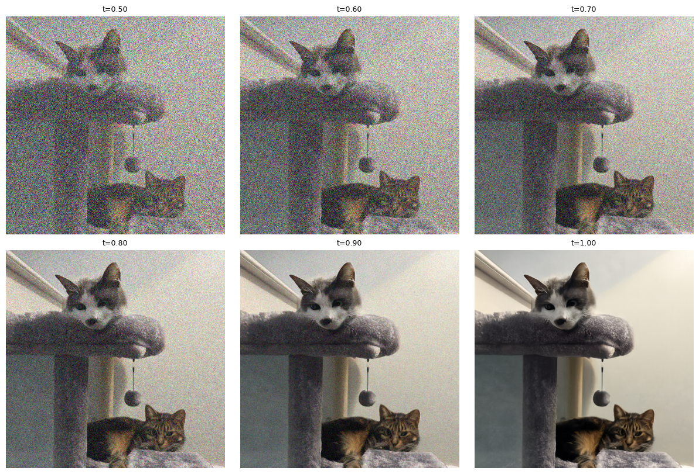
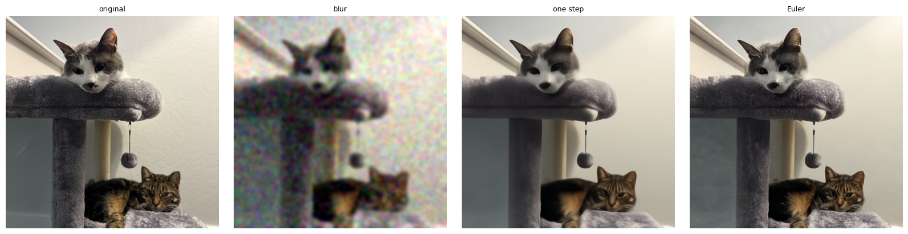
The noise fades a little at every step until the image is clean at t = 1. Euler sampling gives the sharpest result: the fur and the texture of the cat tree come back, where the one-step estimate is smoother and the blur loses most of the detail. The Euler result isn't identical to the original, since the model fills in plausible detail rather than recovering the exact pixels.
Starting from pure noise at t = 0 and running 50 Euler steps with "a high quality photo."
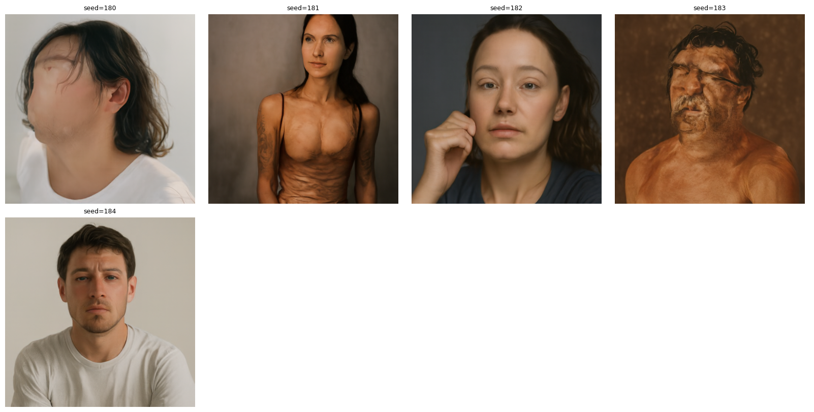
All five samples are photos of people, so the model has a strong bias toward portraits when given such a generic prompt. Without guidance, most of them are distorted: seed 180's face is missing and seed 183's face is warped. Seeds 182 and 184 look like believable portraits.
Pushing the prediction further toward the prompt with vcfg = vc + w(vc − vu), w = 7.
vc uses the prompt and vu uses the empty string, both at the same x and t. Their difference points toward "more like the prompt," and w scales that. With w = 0 this reduces to the plain conditional prediction.
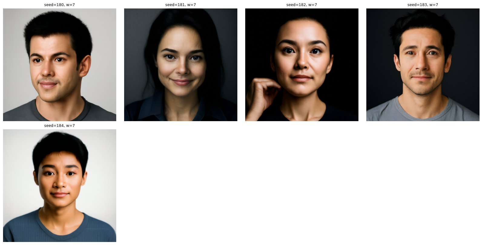
With the same starting noise, every CFG sample is now a clean, well-lit headshot with no distortions. The tradeoff is variety: all five have the same centered framing and studio lighting, and they look more like stock photos than the unguided samples. Some compositions carry over, like the hand by the face in seed 182.
Adding some noise to a real image and denoising it back with CFG (SDEdit).
The edit starts at (1−tstart)ε + tstartx1 and runs the guided Euler sampler from tstart to 1. A small tstart means mostly noise, so the model has more freedom. A larger tstart keeps more of the original.
At t = 0.02 the model keeps only the rough layout and colors: the Campanile becomes a white pillar against a blurry blue background, and the cat photo becomes a phone in someone's hand. The image moves closer to the original as tstart goes up. The Campanile's windows return by 0.25, the cats return at 0.25, and the glasses in the selfie only come back at 0.50.
The penguins turn into black-and-white appliances at low tstart, which keep the penguins' colors and outline, then into penguin-shaped objects at 0.10 to 0.14, and back to penguins at 0.25. The drawings mostly became white paper or devices at very low tstart, since a white page with a few lines doesn't look like any photo. From 0.10 up, the model keeps them as clean line drawings instead of turning them into photos.
The same editing procedure, with a prompt describing the edit instead of "a high quality photo."
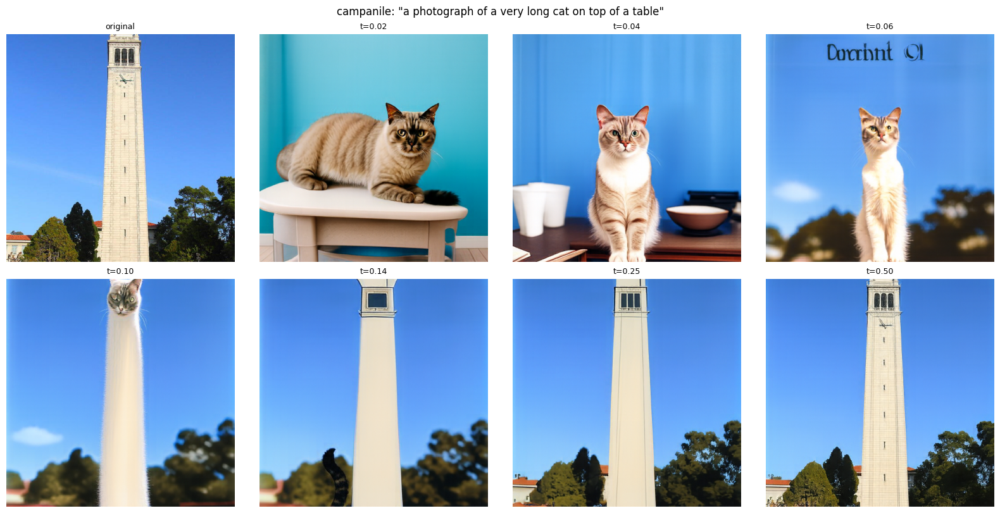
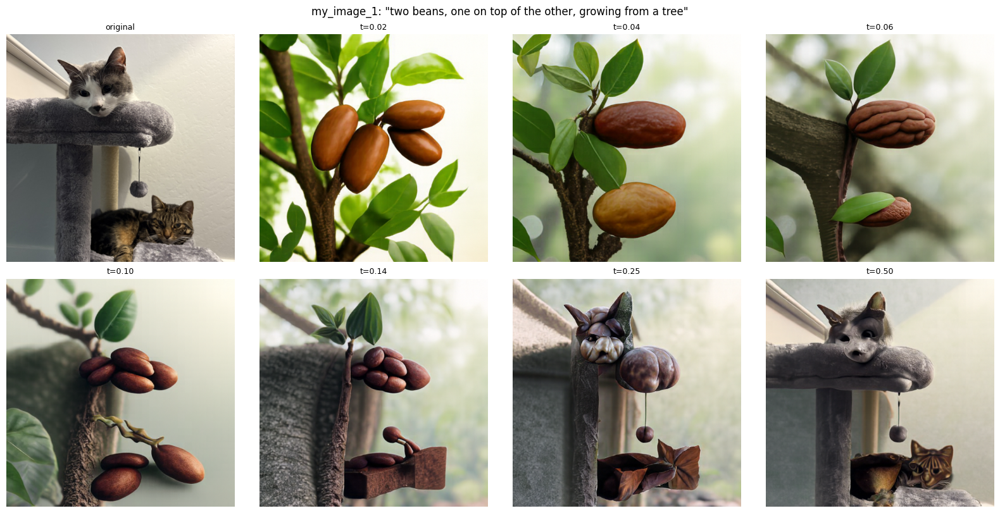
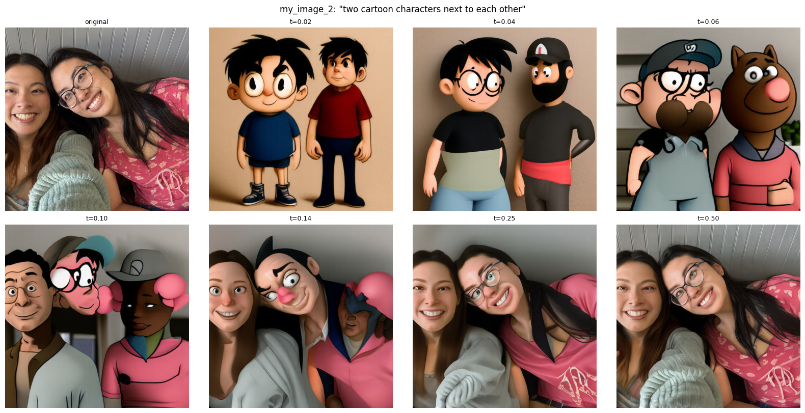
The best result is the Campanile at t = 0.10, where the top of the tower becomes a cat's face and the tower becomes its very long body. Below that, the prompt wins and it's just an ordinary cat on a table. Above it, the original wins. For the cats, low starting times turn them into two beans on a branch, and the cat tree becomes the trunk. At t = 0.25 the top cat becomes a bean-like creature with cat ears, halfway between the two. Lowkey a little creepy. For the selfie, the two of us become two cartoon characters, and at 0.06 to 0.14 the cartoons still keep details from the photo, like Michelle's glasses, the pink shirt and our poses. By 0.25 the edit fades and only the faces look slightly cartoonish. In general, also very creepy.
Images that show one prompt upright and a different prompt when rotated 180°.
At every Euler step I average two velocities: the CFG velocity for prompt a on the image, and the CFG velocity for prompt b on the rotated image, rotated back. The final image has to satisfy both views at once.
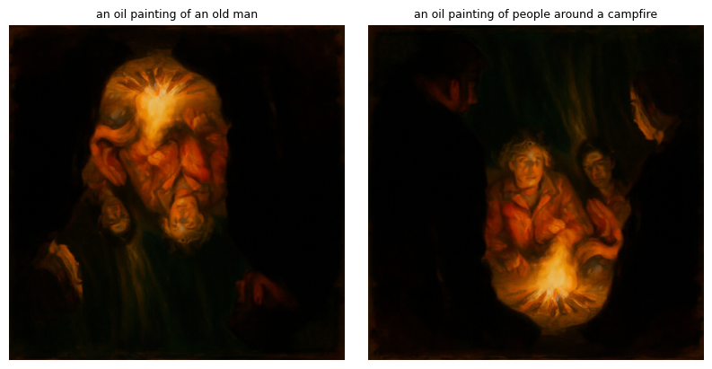
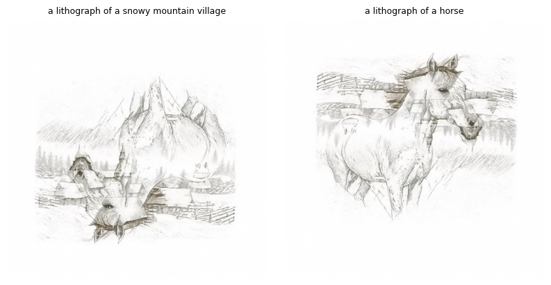
In the first one, the campfire's glow doubles as the old man's lit forehead, and the people around the fire become the folds of his face. The campfire view is the more convincing of the two. In the second, the horse is clear when rotated, and its upside-down head becomes part of the village's houses in the upright view.
Images that show one prompt from far away and another up close.
At every Euler step I combine the low frequencies of the CFG velocity for the distant prompt with the high frequencies of the CFG velocity for the close-up prompt. The low-pass is a Gaussian blur with kernel size 265 and σ = 16.
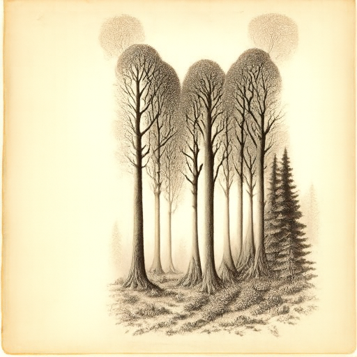
Up close, both images clearly show the close-up prompt. The distant prompts are subtler: the waterfall sits inside a rounded, head-shaped vignette, and the treetops in the forest form a rounded head with two ears. The cat is the easier of the two to see at the small size.
An unconditional UNet built from simple conv, downsampling and upsampling blocks with skip connections.
Each Conv is a 3×3 convolution, BatchNorm and GELU. DownConv and UpConv halve and double the resolution (28 → 14 → 7 and back), and Flatten/Unflatten squeeze the 7×7 map to 1×1 and back. The skip connections concatenate encoder features onto the decoder at each resolution.
Noising MNIST digits with z = x + σε.
At σ = 0 the digits are clean, and as σ grows the noise takes over. By σ = 1.0 the digit is barely visible under the noise.
| Setting | Value |
|---|---|
| Noise level | σ = 0.5 |
| Hidden dim D | 128 |
| Batch size | 256 |
| Optimizer | Adam, lr 1e-4 |
| Epochs | 5 |
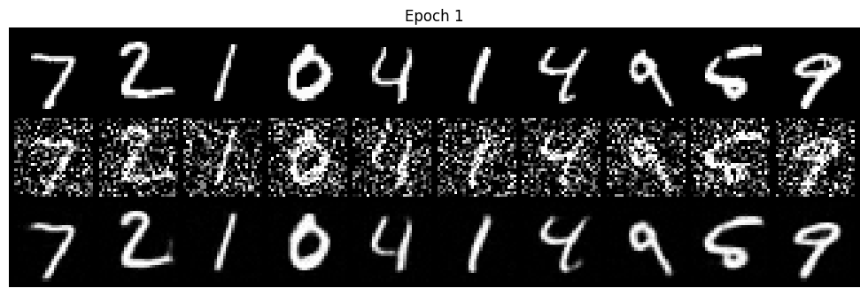
The denoiser removes almost all of the noise and recovers every digit. The epoch 1 and epoch 5 results look nearly the same, with clean strokes that closely match the originals. The epoch 5 strokes are slightly smoother.
The denoiser works well at and below σ = 0.5, the level it was trained on. At σ = 0.8 and 1.0 it starts to fail: the outputs get blotchy, strokes break up, and leftover noise appears, because it never saw that much noise during training.
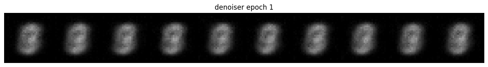
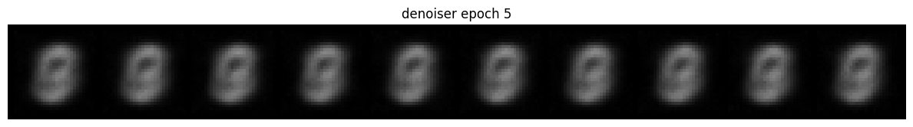
Every output is the same blurry, oval blob, which looks like all ten digits layered on top of each other, no matter what noise goes in. Pure noise carries no information about which digit is the target, and with an MSE loss the best possible guess is the average of all training images. So the model learns to output roughly the mean MNIST digit, the centroid of the dataset, instead of generating new digits.
Injecting the flow time t into the UNet with fully-connected blocks.
Flow matching draws a straight line from a noise image x0 to a real digit x1, xt = (1−t)x0 + t x1, and trains the UNet to predict the velocity along it, x1 − x0. To tell the network where it is on that line, t goes through two FCBlocks (Linear, GELU, Linear). Their outputs multiply the bottleneck and the first up block channel by channel.
| Setting | Value |
|---|---|
| Hidden dim D | 64 |
| Batch size | 64 |
| Optimizer | Adam, lr 1e-2 |
| Scheduler | ExponentialLR, γ = 0.11/20 |
| Epochs | 20 (checkpoints at 1, 5, 10) |
Starting from pure noise and taking 50 Euler steps along the predicted flow.
After epoch 1 the samples are mostly squiggles with only a few digit-like strokes. By epoch 5 about half are recognizable digits, and by epoch 10 the strokes are cleaner and more of them are readable. Many are still malformed, since the model has no idea which digit it is supposed to draw.
Conditioning on the digit with a one-hot vector, dropped 10% of the time for classifier-free guidance.
The digit is passed in as a one-hot vector through two more FCBlocks, so the class scales the features and time shifts them: c1 * unflatten + t1 and c2 * up1 + t2. During training the class vector is set to zero 10% of the time, so the same network also learns to predict without a class. Sampling needs both predictions for classifier-free guidance, vu + γ(vc − vu).
300 Euler steps with classifier-free guidance, γ = 5. Four samples of each digit.
Class conditioning converges much faster than the time-only model: every column already shows the digit it was asked for after epoch 1, just with rough, uneven strokes. By epoch 5 the digits are clean and bold, and epoch 10 looks about the same. That's far fewer malformed samples than in Part 2.3.
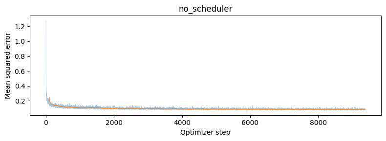
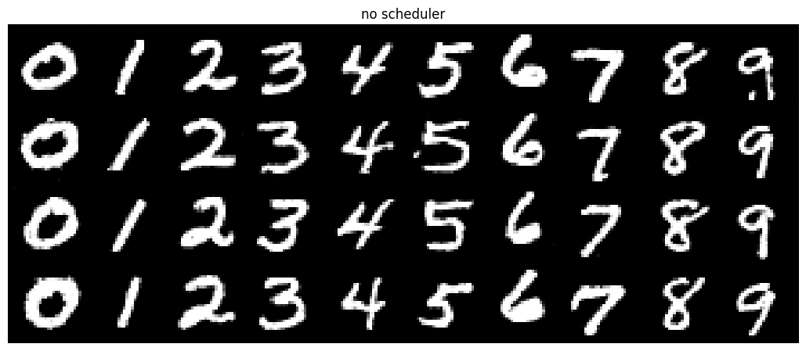
The scheduled run starts at 1e-2 and decays to about 1e-3 by the end. A constant 1e-2 never settles down, so I replaced the scheduler with a constant learning rate of 1e-3, close to where the scheduled run ends up. The loss is a little noisier than with the scheduler, but it trains stably the whole way. The epoch 10 samples look as good as the scheduled model's.
The biggest takeaway I got from this project was learning about why one-step denoising can't generate images but instead we have to do iterative flow matching to generate images. I learned that predicting the clean image directly from pure noise just ends up collapsing onto the average digit of the entire image. Instead, we can break the trip into many small steps along a velocity that we learn and, this way, allow the model commit to one specific digit.